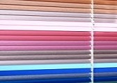
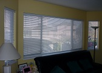
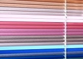
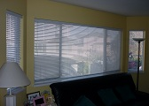

ЦЕНИТЕ СА С ВКЛЮЧЕН ДДС
ЦЕНИТЕ СА С ВКЛЮЧЕН ДДСХоризонтални Щори

цени от 13.22лв./m2
Ценови каталози
модел "Пред стъкло"
модел "Макси"
модел "Ultimate"
Описание
Хоризонталните щори, познати ни още като венециански щори, са най- често използвания слънцезащитен продукт. Декорират и защитават най- често помещения като кухни, всекидневни, обществени и офис сгради. Те са не само практични, но и универсални. Предлагат се във внушителен брой от цветове и форми,включително и такива имитиращи дърво, като същевременно могат да бъдат монтирани- вградени върху стъклодържател, между рамките на дървена дограма, или пък с допълнителни екстри за наклонени повърхности и други. Механизмите им за управление ви позволяват лесно и ефективно да регулирате светлинния поток. Удобни са за експлоатация, демонтират се лекота и се почистват бързо и без усилие.
Състоят се от хоризонтално наредени ламели, направени от алуминий и с ширина 16 или 25 мм, а цветното им покритие е с вечна гаранция. Прецизно изработени те Ви гарантират безпроблемна употреба с години напред.
Изберете ли хоризонталните щори, Вие ще осигурите вашия светлинен комфорт.
Срокът им за производство е кратък- около 5 работни дни.
 


